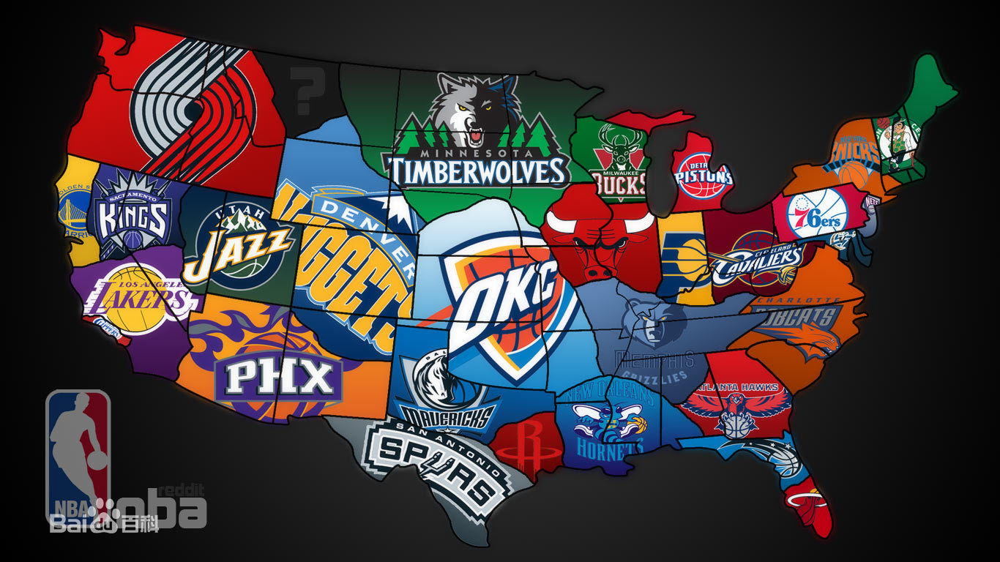

Draft

The NBA draft is held at the end of June every year. the candidates for the draft include those over 19 years old, those who have graduated from high school for more than one year and have officially declared their candidacy. All international players over the age of 22; All players over the age of 19 who have signed contracts with international professional teams; All college-educated native American players. it is a balanced policy adopted by the NBA league to promote team development, which ensures the competitiveness and sustainable development of the league. The NBA draft has a reserve of talent. Newcomers to the draft are usually college students from across the United States, and they are often the best at the NCAA. Before 2006, due to the influence of utilitarianism, many high school players participated in the "draft", and many of them did not graduate from college and entered the NBA.
Starting in 2006, eligibility for the draft has been raised to at least 19 years old, and high school graduates are required to graduate for more than a year. The prerequisite for international players to enter the draft is to play in a professional league in their home country. For example, if an international player attends a high school or university in the United States, he should refer to the entry conditions of a local player. For for their lack of young players, the NBA, according to their during college (or high school) performance rating, and of course the ranking does not determine the team on the draft choice, for reference only.
By drawing lots to avoid losing the team deliberately, because the last count of the regular season does not necessarily mean the number one player. After the first three signs are confirmed, the team with high ranking sign can choose the favorite players from the rookie of the rookie and supplement the position that the team needs to strengthen. After the first 14 rookies in the first round of the non - playoffs, the next 16 are left to the playoffs. The 16 teams' draw in the reverse order of the regular season, that is, the better the performance of the regular season. The order of the second round of draft shows is in the reverse order of last season's performance. The NBA team can take the draft as the bargaining chip in the season player transaction. Therefore, in the actual draft process, ranking is not necessarily consistent with draft sorting.